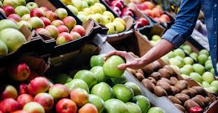
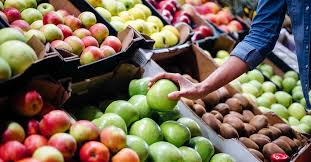

Välkommen till GreenGroves
GreenGroves är en plattform för dig som vill leva mer hållbart. Hos oss hittar du ekologiska produkter och miljövänliga alternativ som bidrar till en grönare framtid. 
GreenGroves är en plattform för dig som vill leva mer hållbart. Hos oss hittar du ekologiska produkter och miljövänliga alternativ som bidrar till en grönare framtid. 